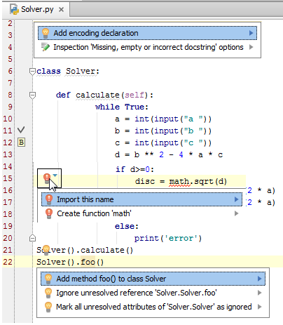

1、主题
我们经常发现在程序中会弹出一个亮着的灯泡，它是用来干什么的？
黄色灯泡意味着Pycharm对你当前编写的代码提出了一些建议，此时的程序并没有什么错误，但是可以对其进行一些改进，例如添加几行说明文档等等。另外一个作用就是创建使用源，比如当你使用了一个尚不存在的函数，Pycharm会通过这种方式来提醒你去创建它。
红色灯泡则意味着Pycharm发现当前代码中存在错误而给出的修正建议，例如需要导入缺失的第三方库、源文件丢失等等。Pycharm会给出快捷方便的纠错提醒。
Pycharm将给出的各种各样的修改建议显示在建议列表中，可以通过以下方式打开建议列表：
单击灯泡图标。
按下Alt+Enter快捷键。

更多相关信息参见Intention Actions。